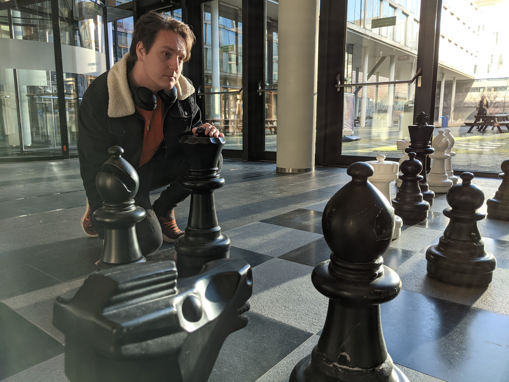
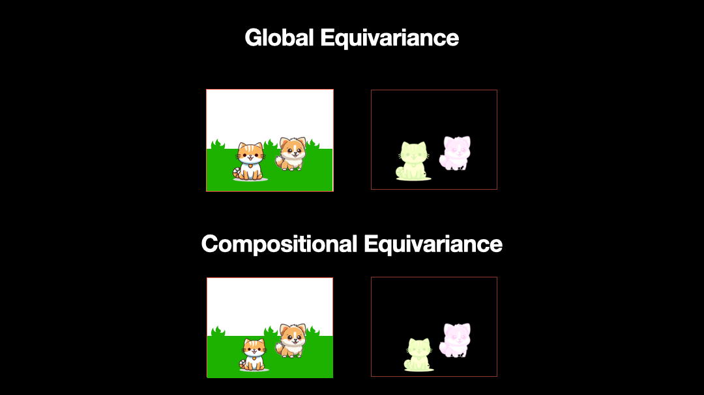

ML Physicist

Howdy! I'm Chase van de Geijn, a eccentric AI Researcher and Orange Enthusiast with an interest in understanding AI at a deep mathematical level. I am doing my PhD at the University of Göttingen mainly focusing on Foundation models for Neuroscience. In the past, I had started a PhD in Edinburgh in Applied Math target towards Geometric DL for Fluid Dynamics. I am also a co-organizer of the NeurReps Workshop in 2024 and 2025, but have stepped away to focus on teaching a GDL course this year.
My main specialty is in Geometric Deep Learning particularly Clifford Algebra. However, I also have done work in Bayesian Neural Networks, Wavelet Theory, AI4Histopathology and have recently gotten into Computational Neuroscience, particularly sparse coding, Vector Symbolic Architectures, and geometric perception/neurogeometry. Generally, I can be described as a highly opinionated, goofy guy, who loves to learn and teach.
In my free time, I enjoy walking, baking, and board games. I am also an enthusiast of the color orange and Dungeons and Dragons. I am an avid fan of Dimension 20 and Dungeons and Dads.
I am passionate about teaching and take every opportunity to share my knowledge with others. I have experience as a teaching assistant in both Bachelor's and Master's level courses.
I frequently give colloquium lectures about my research for various groups at the University of Edinburgh. I have given the following lectures:
